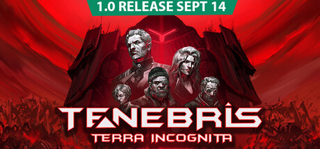
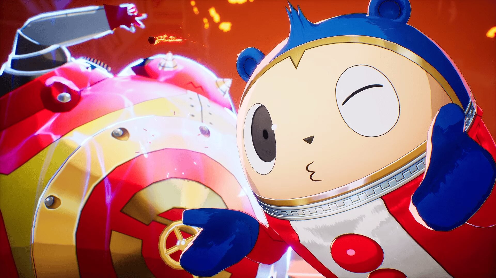

🔥🔥🔥
偶像大师 SideM 初家庭用游戏
系列首次主机化：Switch 2 / Switch 偶像制作&日程冒险；16 单元 49 人；正式标题与档期未定。
- 日期
- 2026-09-13 ~21:05 CST（补入）
- 库
- 二次元游戏观察
- 状态
- 项目启动 · 标题/档期 TBA
今日主线是补入昨晚 偶像大师 SideM（THE IDOLM@STER SideM）系列初家庭用游戏项目（Switch 2 / Switch）；行业侧有独立轴 holoVillage: Our Cozy Days 宣布登陆 Switch 2，以及 Tenebris: Terra Incognita 计划今日出 1.0（截稿仍 EA）。今日无新旗舰；今日无新 MCP/Skill 推荐。AI / 游戏开发空库未出 Tab。
判定：二次元新作公布扛主线；独立轴有新增；旗舰轴安静。不复述 BlizzCon / 原神 7.1 / Melty / Agents API / DeepSeek-V4.1-Flash。不发涉政。
最高 Attention 落在偶像大师 SideM 初主机化；独立轴有 holoVillage Switch 2 与 Tenebris 1.0 计划日。AI 窗内无新 LLM 旗舰、无新 MCP/Skill 推荐。
判定：先推二次元+行业；旗舰轴写清「无」即可。
系列首次主机化：Switch 2 / Switch 偶像制作&日程冒险；16 单元 49 人；正式标题与档期未定。
holo Indie / Roboqlo 宣布舒适生活模拟登陆 Switch 2，目标 2026 秋；Steam 简中店名仍英文。
Phantasmica 宣布今日出 1.0；截稿 Steam 仍 Early Access，首周 25% 折扣。
ATLUS 放出女神异闻录4 Revival 泰迪角色预告；英文 CV Laila Berzins。
二次元主线：偶像大师 SideM 系列初家庭用游戏项目启动。原神 7.1 特别节目已报不复述；一线二游窗内无新开门。
判定：主机化公布达门槛；不把电影升 Signal。
在 SideM 11th STAGE DAY2（2026-09-13）上，官方宣布系列首次家庭用游戏项目启动，登陆 Nintendo Switch 2 / Switch；类型为偶像制作&日程冒险，正式标题与发售日未定。

关注度 · 🔥🔥🔥。来源：偶像大师官方门户 · Gematsu · 電ファミニコゲーマー。
行业主线落在独立游戏观察：holoVillage Switch 2 平台公布 + Tenebris 今日计划 1.0（截稿仍 EA）。展会片单：tinyBuild Connect 未播不写。今日有独立游戏观察新增。
判定：独立轴出卡；BlizzCon 长名单不复述。Culdcept 主机数字版为 9/8 窗外。
holo Indie / Roboqlo 宣布 VTuber 舒适生活模拟《holoVillage: Our Cozy Days》登陆 Nintendo Switch 2，目标 2026 秋；PC（Steam）已于 2026-04-24 发售。
关注度 · 🔥🔥。来源：Steam · Nintendo Everything。
Phantasmica Studios 于 9/13 发 Steam 新闻确认 9/14 推出 1.0，首周 25% 折扣；本报截稿（约 09:36 CST）店页仍挂 Early Access 标签，按「计划翻牌 / 截稿仍 EA」记录，不把未 live 写成已解锁。

关注度 · 🔥🔥。来源：Steam News · 1.0 · Steam 店页。
ATLUS 公布《女神异闻录4 Revival》泰迪（Teddie）角色预告；英文 CV Laila Berzins，日文 CV 山口勝平；Persona 为金时童子。

关注度 · 🔥。来源：Gematsu。